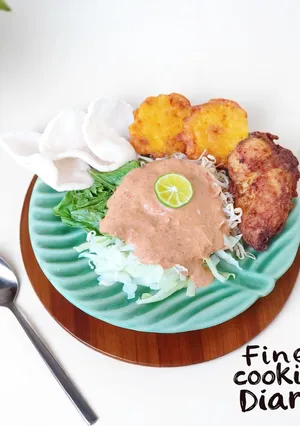

Pecel
Home

Setiap hari minggu, Mama selalu beli pecel sayur untuk makan siang kami. Sekarang giliran saya yang bikin sendiri pecel sayur khas Madiun ini. Tapi kali ini teman makannya sudah berbeda, yg sama hanya kenangan mama
Bahan
- 50 gr kacang tanah
- 1 lembar daun jeruk purut
- Secukupnya kulit jeruk purut (saya skip karena tidak punya)
- Sedikit asam jawa tanpa biji
- 1 sdm gula merah (20gr), atau sesuai selera
- 1/2 sdt garam, atau sesuai selera
- Secukupnya air untuk memblender
- Secukupnya air panas untuk mengencerkan bumb
Cara Membuat
- Sangrai kacang tanah & cabe yang sudah di cuci bersih. Angkat & sisihkan
- Sisir gula jawa, dan potong kecil daun jeruk. Campur dalam wadah blender bersama kacang, cabe, dan asam jawa. Blender semua bahan sampai halus.
- Pindahkan bumbu halus ke wadah, lalu tuang dengan air panas, sesuaikan kekentalan bumbunya. Tes rasa, sesuaikan dengan selera masing-masing
- Kukus sayuran yang sudah di cuci bersih dan di potong-potong, sampai matang, saya pakai sawi hijau, kol, dan tauge
- Tata sayuran, ayam goreng, perkedel jagung, kerupuk di piring saji. Lalu siram dengan bumbu kacang. Pecel sayur siap disajikan